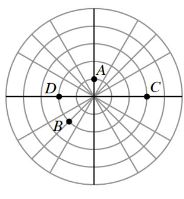
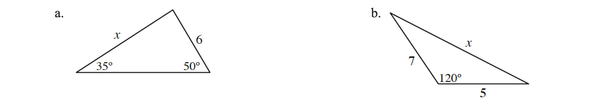
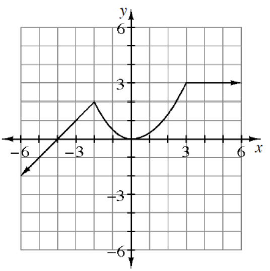

For \(r=\cos(\theta)\), make a table of at least eight values and then sketch a graph.
Using your graph from the previous problem, but without doing any more computations, sketch the graphs of the functions below.
\(r=3\cos(\theta)\)
\(r=-4\cos(\theta)\)
Simplify the following expressions. Write your answers in \(a+bi\) form.
\(3i(2+4i)\)
\((5i)^2\)
\((2+i)(2-i)\)
\((3-2i)(4+i)\)
\((4-5i)^2\)
Sketch \(f(x)=\left\{\begin{array}{cc}-2x+7&\text{for }x<3\\2x-5&\text{for }x\ge 3\end{array}\right.\).
This graph should look like a function you have seen before, that is, the absolute value function. Write an equation for \(f(x)\) using the absolute value function with the necessary transformations.
Shift \(y=f(x)\) to the left 5 units and down 3 units. Write the new equation, \(g(x)\), as any form you like.
Now write an equation for \(g(x)\) using a piecewise-defined function. (Verify your solution by using a graphing calculator.) Compare this equation to the original equation for \(f(x)\). What do you notice?
Write each of the following expressions as a single simplified fraction, without negative exponents.
\(\frac{x+1}{x^{-1}}\)
\(\left(1-\frac{4}{x}\right)\left(\frac{x^2+3}{x^2-x-2}\right)\)
\(\frac{x^3y^{-2}}{x^{-4}y^5}\)
Rewrite each of the following equations in \(y=ab^x\) form.
\(y=8(2)^{x-2}\)
\(y=\left(\frac14\right)^{x+2}\)
\(y=60\left(\frac13\right)^{3x+4}\)
\(y=8\left(\frac14\right)^{x+2}\)
Velma and Edgar work in an accounting office. If they work together they can complete a corporate tax return in 2.5 hours. (Assume that Velma and Edgar were both working for the entire 2.5 hours.) Working alone it takes Edgar 35 minutes longer than Velma to complete the return. How long does it take each person working alone to complete one corporate tax return?
Use a matrix equation to solve the system of equations shown below.
\(\begin{aligned} -4x+7y-12z&=-8\\ 5x-8y&=-14.8\\ x-4y+9z&=7.6 \end{aligned}\)
In this lesson you graphed \(r=\frac{1}{\cos(\theta)\sin(\theta)}\). If you do not recall the shape of the graph, graph the equation on a calculator.
Predict the shape of the graph of \(r=\frac{1}{\cos(\theta)\sin(\theta)}\).
Check your prediction with a calculator.
In the figure there are points marked on the polar grid. What are the polar coordinates of each of those points? Use graph.

Solve for the value of \(x\) for each triangle. Use graph.

c. What is the area of the triangle in part (a)?
Using the graph of \(y=f(x)\), sketch each of the following transformations. Use graph.

\(y=f(x)+2\)
\(y=2f(x)+1\)
\(y=-f(x-2)\)
\(y=f(2x)\)
Given vectors \(u=\langle -3,2\rangle\), \(v=\langle 4,1\rangle\), and \(w=2u-v\), calculate \(|w|\) and \(\arg(w)\).
Answer the following questions about average rates of change.
For a general function \(f\), what does \(\frac{f(5)-f(3)}{5-3}\) represent?
If \(f(x)=x^2+3x+2\), calculate \(\frac{f(5)-f(3)}{5-3}\).
Show that \(\sin(3\theta)=3\sin(\theta)\cos^2(\theta)-\sin^3(\theta)\).
For each of the following pairs of parametric equations, express \(y\) as a function of \(x\).
\(x=\sin^2(t)\) and \(y=\sin(t)\)
\(x=t^2\) and \(y=t\)